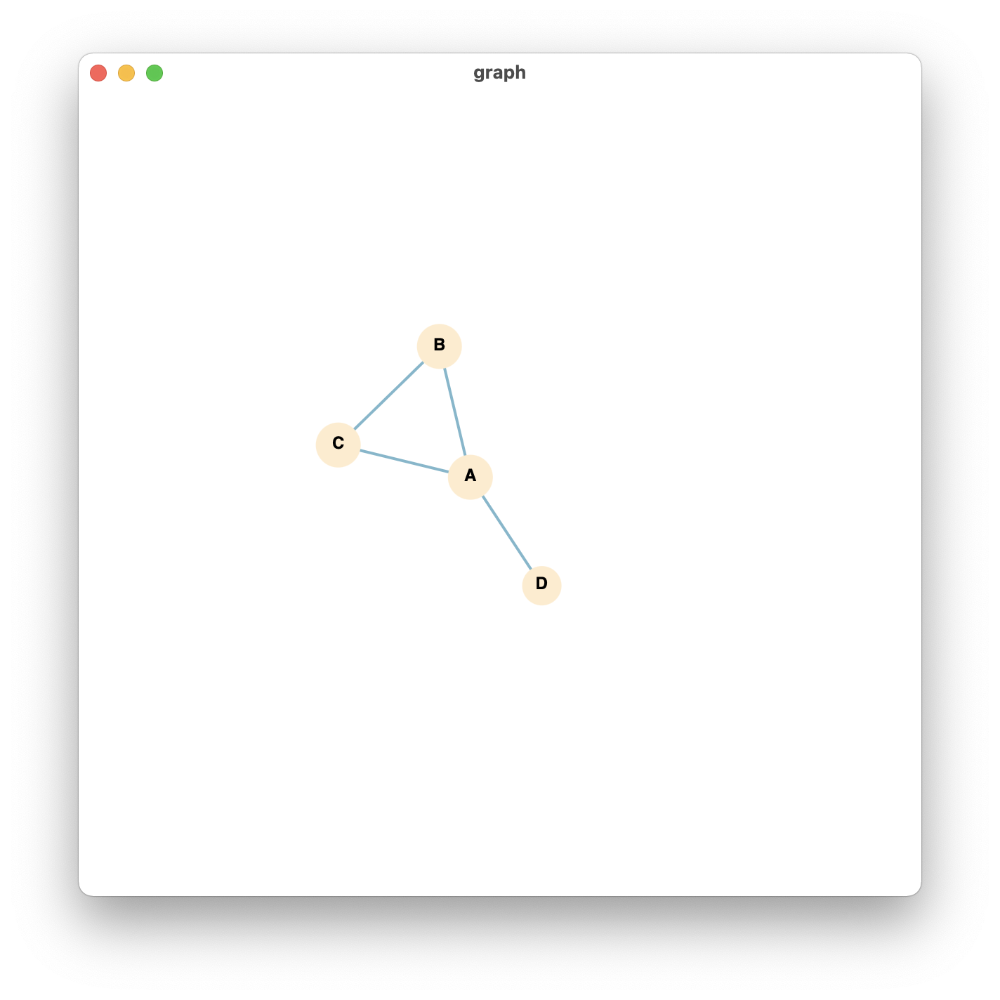

Visualization
draw()
draw(graph, show=True, save=False, filename='filename', encoding='utf-8', canvas_size=(500, 500), node_font='sans-serif', node_fontsize=12, node_fontcolor='crimson', node_fillcolor='#ffebcd', node_size=12, edge_color='#7ab8cc', edge_size=2, edge_distance=100, charge=-300, detailed=False)
Description
Show and/or save a df_graphs.
Based on d3.js (https://d3js.org/) and pywebviewsee (https://github.com/r0x0r/pywebview).
Arguments
graph: a NetworkX df_graphs.
show: show df_graphs immediately if show=True, or do not show until a draw_html(…show=True) is running. The df_graphs is drawing using d3.js (version 3, i.e., d3v3) and is interactive. You can also modify the style of df_graphs by adding other parameters.
save: save output as a html file. The df_graphs being saved is a svg object in the html file. Scalable vector graphic (svg) is a type of image format and can be open by browser software such as Chrome, Edge and Firefox, and can be edited by using Adobe Illustrator. Currently AutoKS can not save a df_graphs as the svg file directly, but you can extract it from the html file.
filename: filename of output html file. Default is “filename”.
encoding: encoding of output html file. Default is “utf-8”.
canvas_size: a list or tuple specifying the size of canvas. Default is (500, 500), which means 500*500 pixels.
node_font: a string specifying the font of df_nodes in the df_graphs. Default is “sans-serif”.
node_fontsize: a number specifying the size of labels in df_nodes. Default is 12.
node_fontcolor: a string specifying the color of labels in df_nodes, can be written in HEX format or just a color name (as long as d3.js know it). Default is “crimson”.
node_fillcolor: a string specifying the color of df_nodes. Default is “#ffebcd”.
node_size: a number specifying the size of df_nodes in the df_graphs. Default is 12.
edge_color: a string specifying the color of edges. Default is “#7ab8cc”.
edge_size: a number specifying the width of edges in the df_graphs. Default is 2.
edge_distance: a number specifying the distance among df_nodes. Default is 100.
charge: a number specifying the charge in the df_graphs. Default is -300.
detailed: show html contents or not. Default is False.
Value
A list of edges.
Examples
import cookiemilk
# import data
my_cmap = [['A', 'B'], ['A', 'C'], ['A', 'D'], ['B', 'C']]
my_data = cookiemilk.cmap2graph(file=my_cmap, data_type='pair', read_from_file=False)
# visualization
cookiemilk.draw(my_data)
Result: 